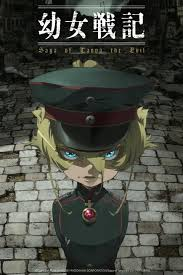

Overlord
Quando um MMORPG bastante popular anuncia que será desligado permanentemente, um jogador veterano se recusa a deslogar: Momonga. À medida que NPCs começam a desenvolver personalidades e mentes próprias, ele decide usar suas habilidades para se tornar o novo chefão do jogo.
Tensei shitara slime datta ken
Minami Satoru, funcionário de uma grande coorporação, é assassinado e renasce num mundo paralelo. No entanto, algo está diferente: ele renasceu como um slime. Lá ele faz muitos amigos e com suas novas habilidades ele enfrenta diversas batalhas que o deixam entre a vida e a morte.

Youjo Senki
Junho de 1923. Uma jovem garota loira de olhos azuis, Tanya Degurechaff, estuda no último nível na Academia Militar Imperial e treina na terceira linha de patrulha do distrito militar do norte, o Norden Theater, como parte de seu serviço para as forças armadas.